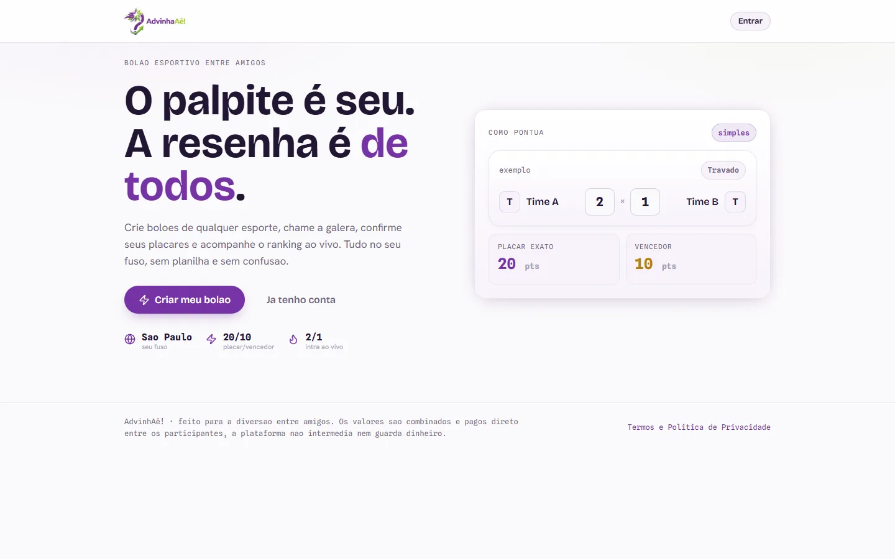
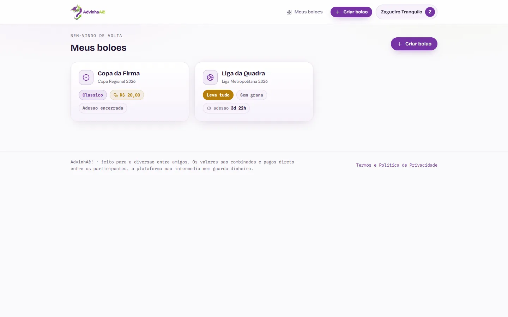
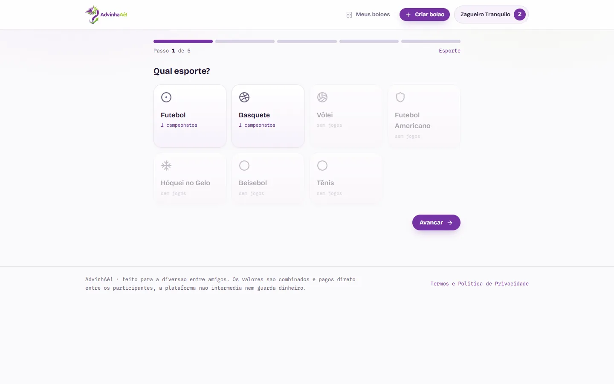
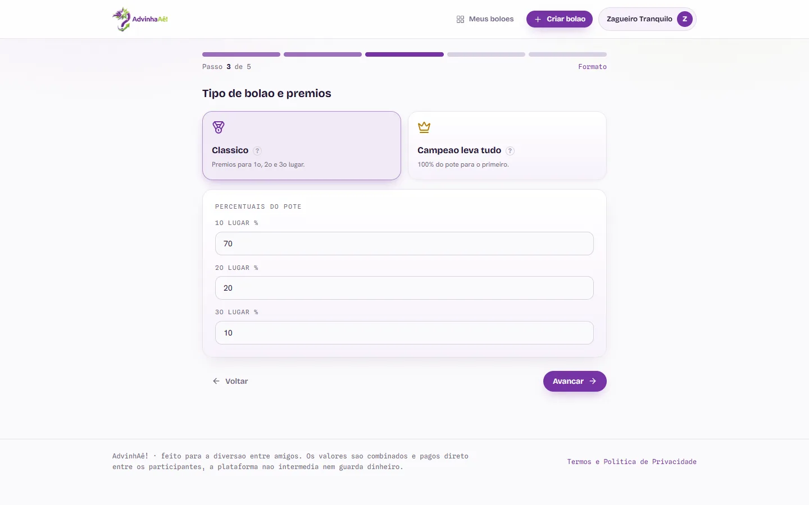
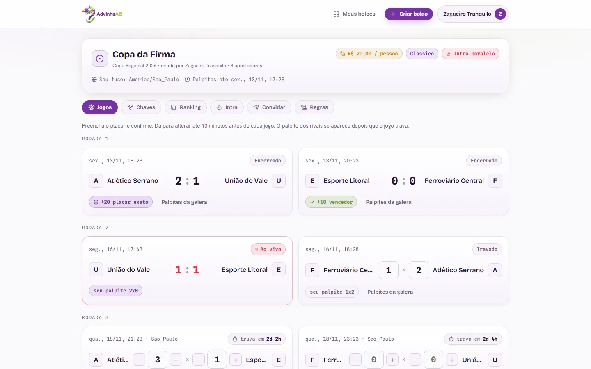
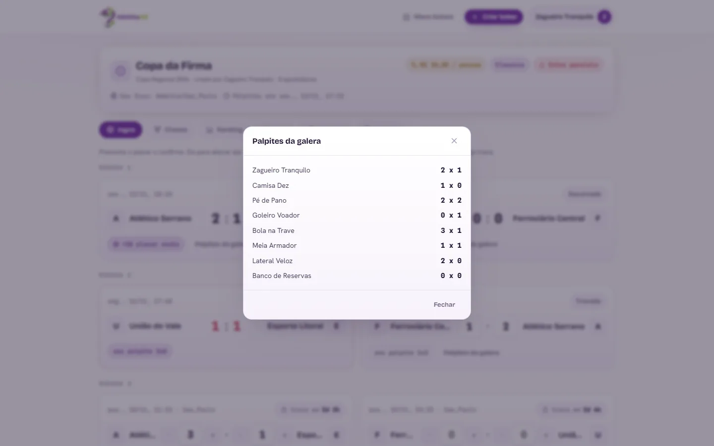
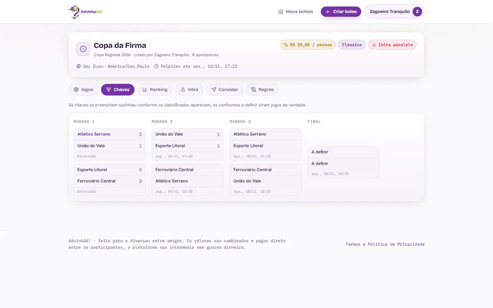
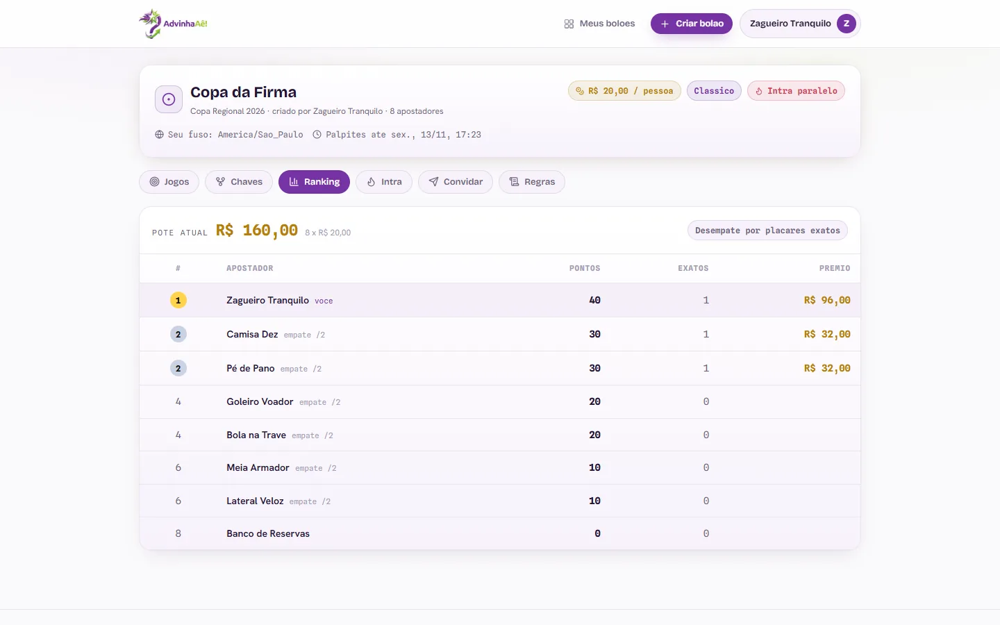
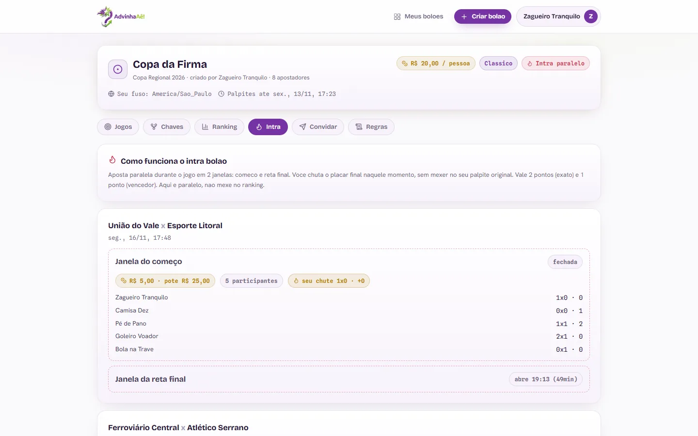

PortfólioSistemas e plataformas
AdvinhAê
Site de bolão: os participantes criam bolões, convidam amigos por e-mail, registram palpites e acompanham o ranking. Jogos e placares são atualizados a partir de uma base esportiva.
- Cliente
- AdvinhAê
- Esportes
- 7
- Login
- E-mail ou Google
- Atualização
- A cada 5 minutos
Telas
Telas reproduzidas a partir do código do site, com o banco trocado por dados fictícios. Dados fictícios.


















Fluxo de páginas
O site é uma página única. A rota fica no endereço (#/painel, #/criar, #/bolao/código).
Criar um bolão
Esporte
7 esportes; só os que têm jogos agendados ficam ativos.
Campeonato
Lista de campeonatos com número de jogos e data do primeiro.
Formato
Clássico (1º, 2º e 3º) ou campeão leva tudo (100%).
Valor e intra
Entrada por pessoa (0 para jogar sem dinheiro) e intra ligado ou não.
Nome e prazo
Prazo de adesão antes do primeiro jogo, no fuso de quem cria.
Demonstração
Placar exato vale 20 pontos; acertar o vencedor ou o empate vale 10.
Regras no banco
- Trava do palpiteUm gatilho recusa palpite feito a menos de 10 minutos do início do jogo.
- Mata-mataPartida sem empate recusa palpite empatado.
- Palpite dos outrosRegra de acesso por linha: o palpite alheio só aparece depois da trava.
- PrêmiosSoma dos percentuais igual a 100 e 1º lugar sempre com a maior parte.
- Empate no rankingDesempate por placares exatos; posições empatadas dividem o prêmio.
- AuditoriaLogin, palpite, criação de bolão e pontuação ficam em logs_auditoria.
Intra bolão
- Duas janelasComeço do jogo (0 a 20 min) e reta final (no futebol, 85 a 110 min de relógio).
- PontosPlacar exato 2, vencedor 1. Um décimo da pontuação normal.
- ValorAposta própria por janela, separada da entrada do bolão.
- AvisoRealtime avisa quem está no site; uma função envia e-mail aos membros.
- RankingO criador decide se o intra soma no ranking geral ou corre em paralelo.